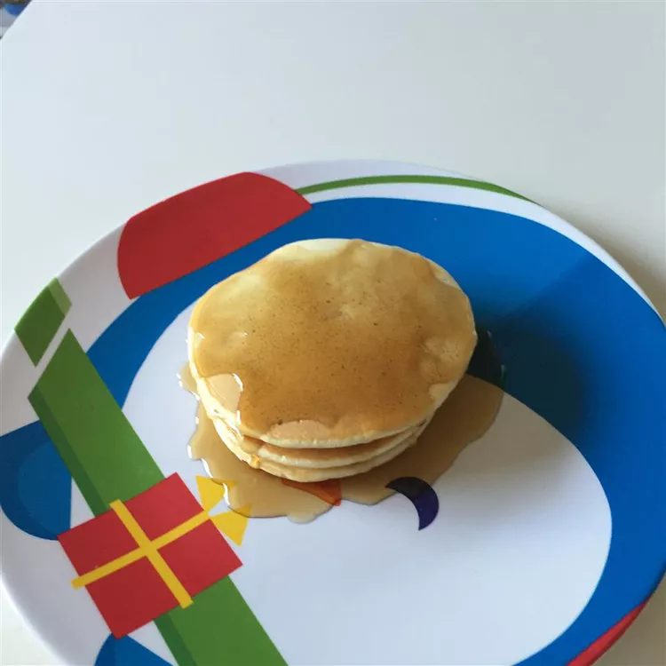

Pancakes
Back To Recipes

How To Make Pancakes
This recipe will go over on how to make Pancakes. They are quick and easy, perfect for those mornings
where you don't have a lot of time to make food.
Prep Time:
5 mins
Cook Time:
15 mins
Total Time:
20 mins
Ingredients
- 2 cups milk
- ¾ cup white sugar
- 2 eggs
- 1 teaspoon vegetable oil
- 1 teaspoon vanilla extract
- 2 cups all-purpose flour
- 1 ½ tablespoons baking powder
Steps
- Place milk, sugar, eggs, oil and vanilla in the blender. Add flour and baking powder. Blend until smooth.
- Heat a lightly oiled griddle or frying pan over medium high heat. Pour or scoop the batter onto the griddle,
using approximately 1/4 cup for each pancake. Brown on both sides and serve hot.